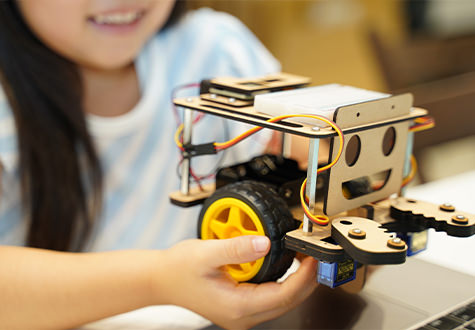

コース紹介
- ホーム
- コース紹介

ロボットプログラミングコース
| 授業数 | 毎週60分×24ヶ月 |
|---|---|
| 対象 | 小学1年生～小学4年生 |
| 開講曜日 | 水曜・土曜・日曜 |
プログラミングの基礎概念を学んだあとに、実際に小型ロボットをプログラミングで制御します。ロボットプログラミングは目に見えて成果が分かるため、「あきっぽい性格なのに熱中している」「いつも子どもが楽しそう」と人気のコースです。小学1年生から始められるプログラミングの入門コースです。
このコースの特徴
- 自分だけのロボットを作れる
- タブレットをタッチする操作でできるビジュアルプログラミング
- 失敗・成功を繰り返すことで自己成長力を養う

Scratchプログラミングコース
| 授業数 | 毎週90分×24ヶ月 |
|---|---|
| 対象 | 小学3年生～中学3年生 |
| 開講曜日 | 火曜・土曜・日曜 |
世界中の子供たちに広く使われている「Scratch」という言語でプログラミングを学びます。かんたんな入力とマウスによる操作で、ブロックをつなぎ合わせてプログラミングを組み立てます。本コースでは、プログラミングの基礎理念を学んだあとに、ゲームの開発をします。アクションゲームやシューティングゲームなど本格的に遊べるゲームを作ります。
このコースの特徴
- 世界中の子どもたちに広く使われている「Scratch」を採用
- パソコンのかんたんな入力とマウス操作でできるビジュアルプログラミング
- 本格的なゲーム開発に挑戦できる